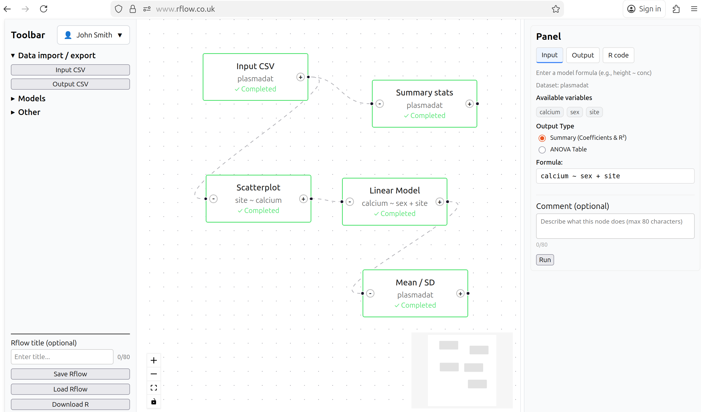

Welcome to Rflow®
No-code data science for R users
- Drag and drop intuitive flowchart interface to build your data science pipeline.
- Online platform to run your Rflow workflow in the cloud
- Share your workflows with other Rflow users through the Rflow project dashboard.
- Export your Rflow workflow to a reproducible R script for further analysis and customisation.
- No lock-in to Rflow, you can run your exported R scripts in RStudio or other IDEs.
- Uses popular leading R packages for data science including ggplot2, glmmTMB, DHARMa and car.
- Extensive tutorials and training materials to help you get started with Rflow and R programming.
Visualise. Analyse. Interpret. Reproducible data science in R with flowcharts.
Launching Autumn 2026
Easy to learn
- Simple drag and drop interface
- No prior coding experience required
- Extensive tutorials and training materials
- Unified approach to statistics
- Tests as (generalised) linear models
Reproducible
- Share your workflows with other Rflow users via Rflow project dashboard
- Use Rflow to create reproducible data science workflows
- Export your workflow to a reproducible R script
- Customise your R scripts later in RStudio or other IDEs
Visualise and interpret
- Visualise your data using ggplot2
- Scatterplots, boxplots, histograms, barplots and more
- Visualise model diagnostics using DHARMa
- Store model outpus for predictions
See Rflow in Action
Build complex workflows in minutes, not hours

How It Works
- Drag & Drop Nodes: Select from the toolbar and add analysis nodes (CSV import, transformations, visualizations, models)
- Connect Your Workflow: Draw edges between nodes to define data flow from step to step
- Export R Code: Click export to get production-ready R code that you can run in RStudio or anywhere R runs
Perfect for
Rflow is designed for anyone working with R
Students
Data analysis learning
Learn R by example. See the generated code from your visual workflow to understand R syntax. Extensive tutorials and training materials to help you start with Rflow and R programming.
Researchers
Scientific research
If you are more familiar with SPSS, SAS, Stata, Minitab or other GUI-based software, Rflow provides a simple and intuitive interface to perform data analysis in R. Export your workflow as an R script for further analysis and customisation.
Data scientists
Quick prototyping
Rapidly prototype your data analysis workflow via Rflow’s visual interface. Export to R when ready for further customisation.